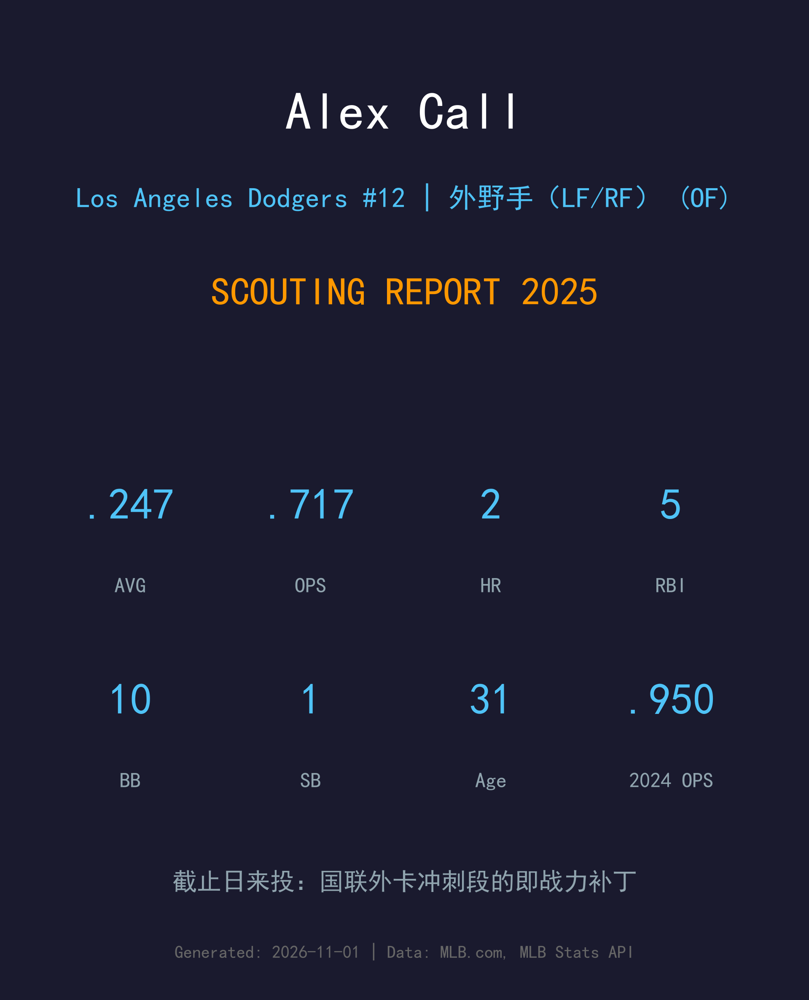
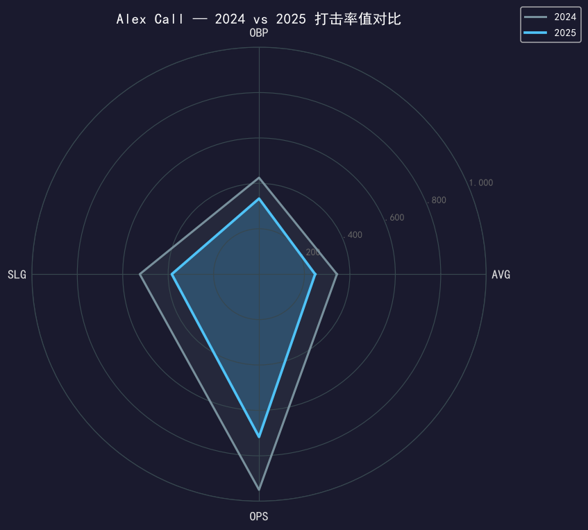
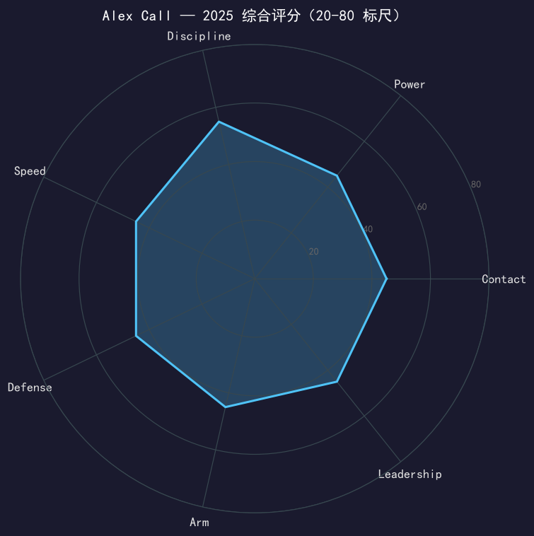

Los Angeles Dodgers #12 | 外野手（LF/RF） | 右打 | 截止日补强

⚠️ 小样本警告：本报告的 2025 道奇数据仅覆盖交易后的 38 场 / 85 个打席。
7 月 31 日交易截止日，道奇从华盛顿国民换来 Alex Call，付出两名小联盟投手（Sean Paul Liñan、Eriq Swan）。这是一次典型的「冠军队补外野深度」操作：Conforto 状态不稳、外野需要能打左投的右打补丁。Call 交出的答卷是 .247/.333/.384——.333 的上垒率在 85 个打席里是及格的替补产出。
他的生涯轨迹是典型的 journeyman：2022 年才登上大联盟，2024 年在国民打出 .343/.425/.525 的小样本高峰（30 场），2025 年被纳入冠军阵容。他不在道奇 2026 年的计划中心，但他是那种每支冠军队都需要过的人物：能在九月替你把一个打席走满的职业球员。
30 场 .343/.425/.525、OPS .950、3 轰 5 盗——出场时间有限但效率惊人，这是他进入冠军队雷达的开始。
冠军队用两名小联盟投手换来即战力外野；次日即激活入队，38 场出赛守过左外野与右外野。

| 赛季 | G | PA | AVG | OBP | SLG | OPS | HR | RBI | BB | SO | SB |
|---|---|---|---|---|---|---|---|---|---|---|---|
| 2024 (国民) | 30 | 113 | .343 | .425 | .525 | .950 | 3 | 14 | 12 | 19 | 5 |
| 2025 (道奇) | 38 | 85 | .247 | .333 | .384 | .717 | 2 | 5 | 10 | 19 | 1 |
.950 → .717 的落差首先要用样本解释：2024 年的 30 场本身就是 career-year 级别的波动。剥离噪音后，Call 的真实水平更接近 2025 道奇段的 .247/.333：能打、能选、长打有限。值得肯定的是 19 次三振对 85 PA（22.4%）的纪律性，以及加盟后立刻可用的防守——冠军队买的就是这个确定性。
Call 不是明星，但他是 roster construction 里的正确答案：右打、能守左右外野、上垒能力在线。道奇在截止日选择他而不是更贵的选项，本身就是一种评价——「够用、立刻能用、不破坏化学反应」。
8 月 1 日激活后到常规赛结束，他主要作为platoon 补钉与代打出现。没有季后赛出场记录——在 Pages、Teoscar、Conforto 都在健康名单的十月，他的位置就是深度。冠军戒指是他职业生涯的第一枚。

冠军队的标准外野补丁，价值在确定性而非上限
C+ 级 / 替补外野（小样本警告）
道奇 2025 季后赛之路：外卡轮 2-0 红人 → NLDS 3-1 费城人 → NLCS 4-0 酿酒人 → 世界大赛 4-3 多伦多蓝鸟（二连霸）。
Alex Call 将在休赛期进入自由球员市场（或球队选项的讨论桌）。31 岁的他最好的前景是继续以「能立即上场的第四/第五外野」身份留在争冠队边缘；对他而言，2025 年已经从冠军队领到了最好的一份简历背书。
短期：争取留队或签约新的争冠队，定位不变
中期：作为 veteran depth 延续生涯
长期：生涯后期向 coaching 转型是常见路径
Alex Call 出生于明尼苏达州伯恩斯维尔，2016 年选秀进入职业棒球，2022 年 7 月 11 日才完成大联盟首秀——六年小联盟的坚持换来的六天或者六年，这是大多数职业球员的真实故事。2024 年他在华盛顿国民打出 .950 OPS 的小样本高峰，2025 年 7 月 31 日，他被交易到正在卫冕的道奇。
从重建队到冠军队只用了一个电话。他的故事提醒我们：roster 的每一块拼图都有自己的旅程。